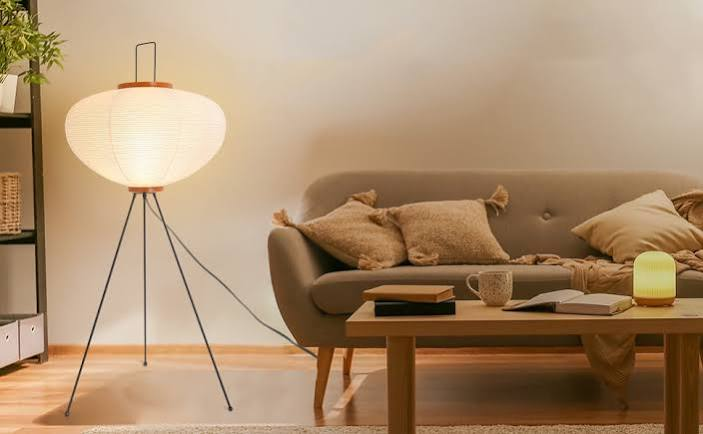
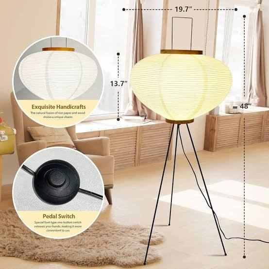
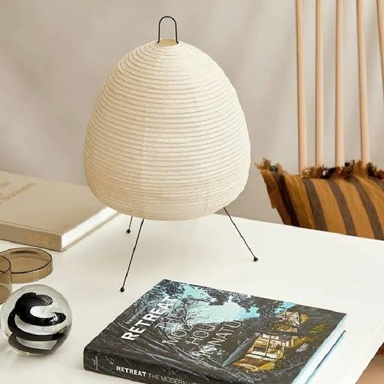

Most listings selling this shape borrow, directly or loosely, from one lineage: Isamu Noguchi's Akari light sculptures, first designed in the 1950s and still produced today under official license, retailing from roughly €300 to well over €1,000 depending on size and model.
The versions circulating on Amazon are not that lamp.
They are a different object, made with different materials, by different manufacturers, at a fraction of the price. The interesting question is not "does it look similar in a photo" — it obviously does. The interesting question is whether the construction holds up once the lamp is actually lit, in an actual room, over actual months of use.

What "Akari-Style" Actually Means Here
Before getting into the review, one clarification worth making explicit, because most listings blur it: none of the tripod paper lamps sold under names like "Akari Noguchi Style" or "Japandi Lantern" on Amazon are officially licensed Noguchi products.
The Akari trademark and the original light sculpture designs are controlled by the Isamu Noguchi Foundation and produced under license (notably by Vitra in Europe and Ozeki in Japan).What you're buying instead is a design-inspired object — same silhouette, same principle (a diffused paper shade around a light source, raised on a tripod or floor base), built with commercial materials and mass manufacturing.
That distinction matters for expectations.
It does not automatically make the budget version a bad purchase.
It just means the comparison should be honest.
Construction: What's Actually Inside a €40–€70 Version
The shade material is the first thing to check, and it's where listings vary the most. Three variants show up repeatedly across sellers:
Genuine handcrafted rice paper (washi-style) stretched over a wire frame — closer to the original material logic, more fragile, slightly uneven light diffusion (in a good way — less "lightbulb," more "glow").
Paper-blend or reinforced paper — more tear-resistant, marketed as "handmade," diffusion is slightly flatter and more uniform.
Fabric or synthetic substitutes dressed up as paper in photos — these tend to diffuse light less softly and are the ones most likely to disappoint once unboxed.
The base is almost universally a folding metal tripod, powder-coated black or left in raw metal tone.
This is actually a functional upgrade over some original Akari floor models, which use lighter bases — the tripod spread (usually 45–58 cm) gives real stability, which matters if the lamp lives in a room with foot traffic or pets.
Most units ship with an E26/E27 LED bulb included, frequently offering a switch between 3000K (warm, amber-leaning) and a cooler daylight option. For ambient use — which is the entire point of this object — 3000K is the setting worth using. Anything higher defeats the purpose of a diffused paper shade.

Light Quality: The Part Most Reviews Skip
The actual test of this category of lamp isn't how it looks off — it's how it behaves once it's on.
A well-made paper shade does two things simultaneously: it scatters the light source so there's no visible hotspot or filament glare, and it lets a soft percentage of light pass through the paper grain itself, so the shade appears to glow rather than simply "have a light inside it." Lower-tier versions fail at the second part. The paper is treated or blended with synthetic fiber for durability, which reduces translucency — the shade looks more like a solid lit-from-within object than a genuinely diffused one.If you can, check listing photos for the lamp switched on in a dim room, not styled in daylight.
That's the actual test shot, and sellers who are confident in their diffusion quality tend to include one.
Where the Budget Version Genuinely Competes
For ambient, secondary lighting — not the primary light source in a room — the functional gap between a €50 version and a several-hundred-euro licensed original is small.
Both are doing the same physical job: softening a light source through a paper diffuser.
The original's premium is concentrated in provenance, exact paper craftsmanship (often hand-applied by artisans trained in the specific technique), and design authorship — not in a dramatically different lighting outcome.
For someone renting, moving within Europe, or simply not ready to commit several hundred euros to a single lighting object, this is the more defensible version of "good enough." That's a legitimate purchasing decision, not a compromise to feel embarrassed about.

Akari-Style Tripod Rice Paper Floor Lamp Handmade paper shade · Metal tripod base · Dimmable LED, 3000K/5000K
[CHECK CURRENT PRICE → AFFILIATE LINK]
(Swap in your Amazon OneLink URL for the exact SKU you're promoting — tag: nomadisch-21 or your regional equivalent)Where It Falls Short
Two recurring weak points, based on the construction patterns across listings:
Paper durability near moisture. Rice paper and paper-blend shades are not rated for bathrooms, kitchens, or high-humidity climates — this includes coastal UK and much of the Netherlands in winter. Warping and yellowing over time is the norm, not a defect.
Wiring and bulb quality on the cheapest listings. The lamp body itself is simple to manufacture well; the electrical component is where corners get cut on the lowest-priced versions. A dimmable, UL/CE-certified LED driver is worth confirming in the listing specs before purchase — it affects both safety and how smoothly the warm-white setting actually dims.
Who This Lamp Actually Suits
This object makes the most sense as a secondary light source — a bedside floor lamp, a reading corner accent, a softening element next to a window — rather than the only light in a room. It also suits spaces styled around natural materials and low visual noise, where a glowing paper form reads as intentional rather than decorative filler.
It makes less sense as a statement piece meant to anchor a room on its own, or in households where durability across years, not months, is the primary requirement. In that case, the licensed original — or a solid ceramic/glass floor lamp — is the more defensible spend.
Our Technical Verdict
Light diffusion quality: ★★★★☆
Build stability (tripod base): ★★★★★
Material authenticity vs. original design: ★★★☆☆
Value for the price point: ★★★★★
Longevity (multi-year use): ★★★☆☆
Overall design fidelity to source: ★★★★☆
Hype-to-substance ratio: more favorable than most viral home decor items. The core mechanism — a paper diffuser softening a light source — is not a marketing gimmick, it's basic and well-understood lighting physics, and the budget version replicates it competently.
The most accurate description: a legitimate, lower-cost interpretation of a well-established lighting principle — not an authentic reproduction, and not sold as one by any listing worth trusting.
The Intentional Consumption Angle
The relevant question, in line with how we evaluate objects here, isn't "is this the real Akari lamp."
It isn't, and no honest listing claims otherwise. The relevant question is whether the object earns its place in a room through what it actually does — and a well-made paper tripod lamp does something genuinely useful: it turns a single LED bulb into ambient, shadow-free light, using a diffusion method with real design lineage rather than a plastic shade with no reason for its shape.
Choosing the €50 version over the €500 version isn't a lesser choice. It's a different one, made deliberately, for a specific stage of a home — which is the more meaningful version of curation than always defaulting to the more expensive object.
FAQ
Is the Amazon Akari-style lamp the same as the real Noguchi lamp?
No. It is not an officially licensed product. The original Akari series is produced under license by manufacturers including Vitra. Budget versions are design-inspired objects made with different materials and manufacturing methods.
Is rice paper floor lamp lighting good for everyday use?
It works well as ambient or secondary lighting due to its diffused, glare-free output. It is not typically bright enough to serve as a room's sole light source for tasks like reading fine print.
Does a paper lamp shade damage easily?
Paper and paper-blend shades are more fragile than fabric or glass shades and are sensitive to humidity and direct moisture. With normal indoor handling, most last several years.
What color temperature is best for this type of lamp?
3000K (warm white) is generally recommended, as it complements the natural, translucent character of the paper diffusion. Higher color temperatures reduce the cozy, glowing effect that is the main appeal of this lamp style.
Is a tripod paper lamp a good gift or rental-friendly option?
Yes — its low cost, lightweight build, and lack of permanent installation make it well suited for renters or anyone furnishing a temporary space.
Affiliate disclosure: This article contains Amazon affiliate links. Nomadisch may earn a commission on qualifying purchases made through these links, at no additional cost to the reader. This does not affect our editorial assessment. See our [Affiliate Disclosure] and [Editorial Policy] for details.